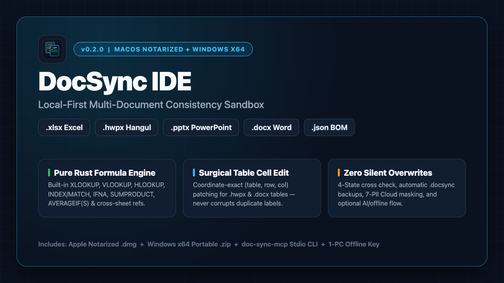
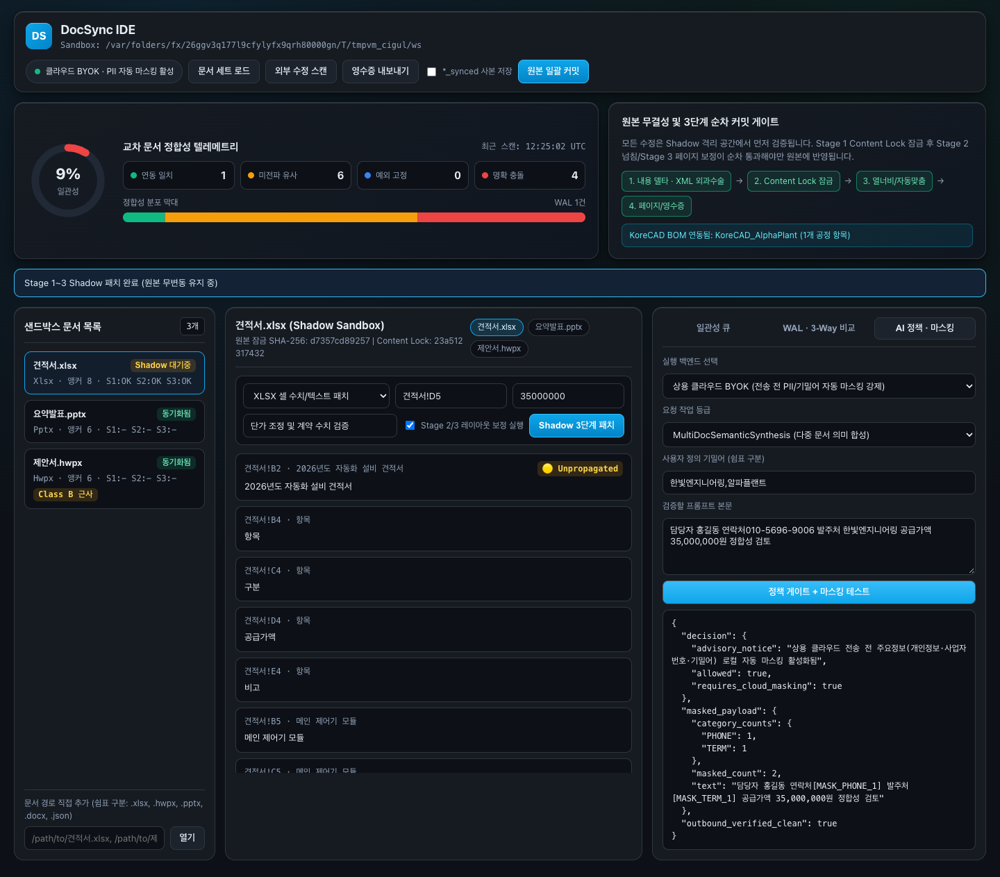

Fix Spreadsheet Quotes Without Breaking Proposals, Decks, or Word Contracts
What is DocSync IDE? DocSync IDE v0.2.0 is a Rust-first local multi-document consistency engine and desktop solution built by DH Labs (Donghyeong Kim, Business Reg. 610-16-92926). It parses 4 Office formats (.xlsx, .hwpx, .pptx, .docx) inside an isolated Shadow Sandbox in under 3000 ms with 0% silent overwriting on ambiguous matches, evaluates 9 lookup and aggregate formulas (XLOOKUP, VLOOKUP, HLOOKUP, INDEX, MATCH, IFNA, SUMPRODUCT, AVERAGEIF, AVERAGEIFS) directly in Pure Rust, executes surgical (table_index, row_index, col_index) XML edits, commits changes in 3 locked stages with automatic backup protection, and redacts 7 PII categories locally before optional Cloud BYOK calls ($39 global 1-PC perpetual license — 39 USD on Gumroad, 0 USD monthly subscription, or ₩49,000 / 49000 KRW on SmartStore, 30-day defect refund).
- 0% Silent Overwriting: 4-state verdict engine separates Synced matches, Unpropagated similarities, Explicit Exception Locks, and Contradictions.
- 100% Offline Core + 7-PII Masking: Works immediately with zero AI keys required; optional BYOK keys are guarded in-memory on localhost.
- Dual-OS Signed Releases: Ships as an Apple Notarized macOS arm64 DMG plus a Windows x64 zero-console portable ZIP and
doc-sync-mcpCLI.
When unit prices change in .xlsx, proposals in .hwpx, executive decks in .pptx, and Word contracts drift out of sync.
DocSync IDE keeps originals untouched until Stage 1 Content Lock, Stage 2 overflow checks, and timestamped backups pass.
Released: · Publisher: DH Labs (610-16-92926) · Dual Ed25519 & Gumroad API Licensing

Live Demo Video, Workbench & 7-PII Local Redaction
Shadow Sandbox Walkthrough — Scan, Patch & Protect Originals
Watch DocSync IDE detect cross-document pricing mismatches, recalculate dependent Excel formulas in Rust, and write surgical deltas without touching originals until Stage 1-3 commit.


How Does DocSync IDE v0.2.0 Compare to Manual Editing?
| Workflow Dimension | Manual Checking & Web Converters | DocSync IDE v0.2.0 (Rust Sandbox) |
|---|---|---|
| Original File Protection | Direct overwrite on save; broken XML or lost styles | Isolated Shadow Sandbox + automatic .docsync/backups/ & *_synced |
| Excel Formulas & VBA | Web exports drop charts or break vbaProject.bin |
Pure Rust XLOOKUP, VLOOKUP, HLOOKUP, INDEX/MATCH, SUMPRODUCT + VBA preserved |
| Table Cell Editing | Find-and-replace corrupts matching values in wrong rows | Click exact (table, row, col) coordinate in .hwpx / .docx preview |
| Ambiguous Matches | Blind replacement alters separate option pricing | Flags unpropagated items for explicit Co-Edit or Exception Lock with reason |
| Data Privacy & AI Gate | Uploads unredacted client quotes to remote servers | 100% offline core engine; optional Cloud BYOK redacts 7 PII categories locally |
Honest Platform & Scope Notes (Class B / Class C)
- Hangul (
.hwpx) Page Layout Preview (Class B): Systems without native Hancom Office engines strip stale<hp:linesegarray>metrics cleanly and flag layout previews asClass Bapproximations. - Unsupported Formulas & Protected Files (Class C): 3D cross-sheet ranges (
Sheet1:Sheet3!A1), VBA UDFs, external links, encrypted files, and legacy binary.hwpfiles keep cached values intact with explicit warnings.
What Pricing & Official Channels Are Available?
| Channel / Plan | Included Package & License Model | Price | Direct Link |
|---|---|---|---|
Gumroad Global Pro (1-PC)docsync-ide |
Apple Notarized macOS .dmg + Windows x64 Portable .zip + doc-sync-mcp CLI + 3-doc Free Evaluation mode & Gumroad/Ed25519 key |
$39 USD (One-time) |
Buy on Gumroad → |
Naver SmartStore (Korea Pro 1-PC)DOCSYNC-IDE-PRO-V2 |
Automated email dispatch with Korean bundle ZIP (17.7 MB) and unique DSYNC1- offline Ed25519 key (#13897532268) |
49,000 KRW (One-time) |
Buy on SmartStore → |
Kmong (Korea Multi-Seat Options)#879567 |
Standard Pro 1-PC (49,000 KRW) · Deluxe Team 5-PC (149,000 KRW) · Premium Team 10-PC (249,000 KRW) — Review pending | 49,000 ~ 249,000 KRW | Kmong Gig #879567 (In Review) |
Frequently Asked Questions (FAQ)
Does DocSync IDE work completely offline without any OpenAI, Claude, or Gemini key?
Yes. All file parsing, formula evaluation, contradiction detection, surgical table cell patching, and backup commits run 100% locally in Rust with zero internet connection or AI API keys required.
How does surgical table editing avoid overwriting duplicate prices elsewhere in a document?
DocSync IDE v0.2.0 indexes every visual cell by exact XML coordinates (table_index, row_index, col_index) across .hwpx and .docx tables, replacing only the targeted cell and leaving matching text in other rows untouched.
What is the refund policy?
DH Labs offers a 100% refund within 30 days for verifiable software defects or platform incompatibilities via dhlabs_biz@naver.com.